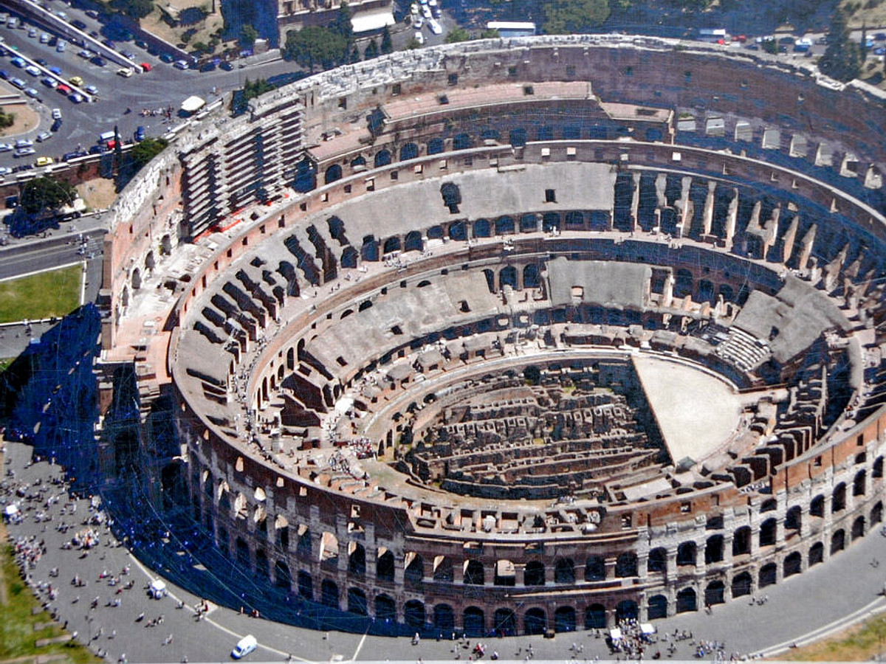
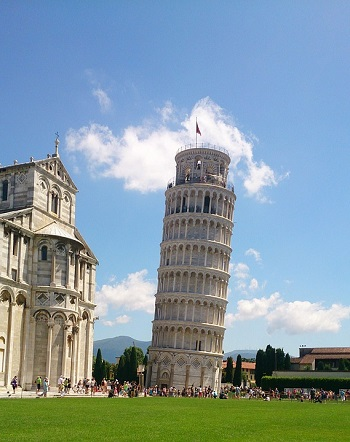
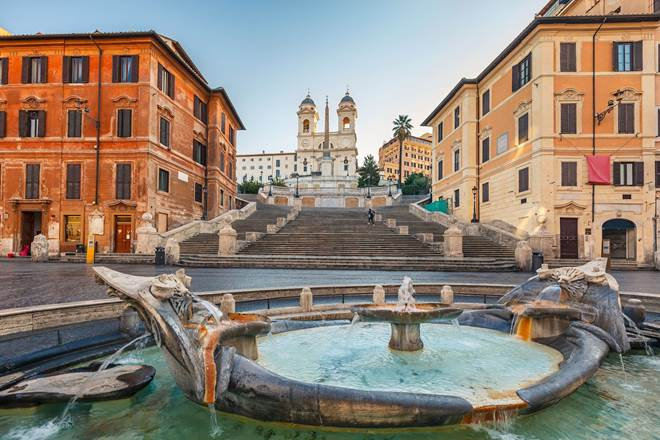
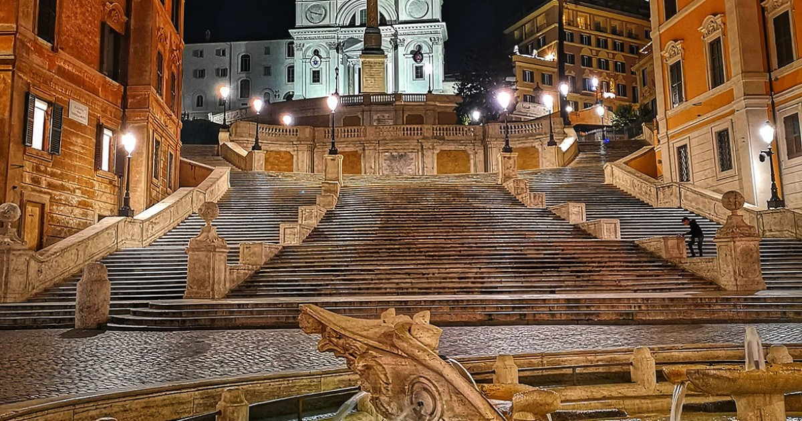
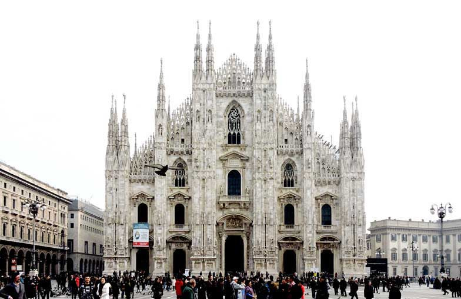
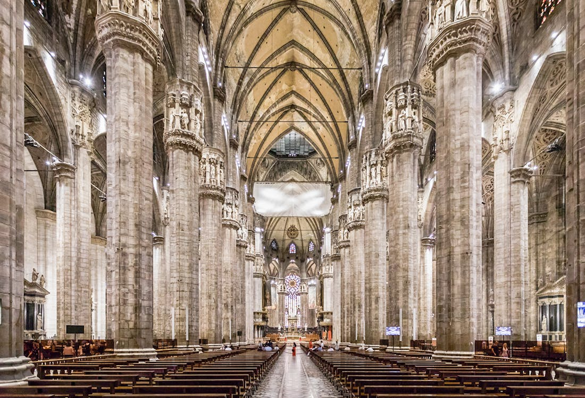
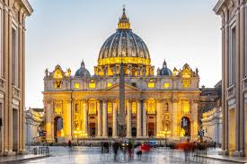

The Colosseum, Rome


The Colosseum is one of the most iconic landmarks in the world, standing at the heart of Rome since the 1st century AD. Built during
the Roman Empire, it once hosted grand gladiator battles, public spectacles, and events that shaped ancient history. This monumental
amphitheater could hold tens of thousands of spectators, showcasing the power, engineering, and ambition of ancient Rome. Today,
visitors can walk through its arches, explore its underground chambers, and imagine the roar of the crowds from centuries past.
As the sun sets, the Colosseum glows warmly against the Roman skyline, creating a truly unforgettable sight. More than just a monument,
the Colosseum is a timeless symbol of Rome’s legacy and a must-see for anyone visiting Italy.
Best time to visit:
Early morning or late afternoon to avoid crowds and enjoy cooler temperatures.
Opening hours:
Daily, approx. 8:30–19:00 (last entry one hour before closing; may vary by season).
Entry:
Ticket required (€18–€22); includes access to the Roman Forum and Palatine Hill.
SEE MAP
The Leaning Tower of Pisa, Pisa


The Leaning Tower of Pisa is one of the most recognizable landmarks in the world, famous for its unintended tilt and timeless charm.
Located in the city of Pisa, this iconic bell tower was built in the 12th century as part of the cathedral complex in the Piazza dei
Miracoli. Due to unstable ground, the tower began to lean during construction, turning a simple flaw into a global symbol.
Visitors can climb its spiral staircase to enjoy stunning views of the surrounding city and countryside. Carefully preserved through
modern engineering, the tower continues to stand as a testament to history, resilience, and Italian ingenuity. More than just a
curiosity, the Leaning Tower of Pisa is a must-see experience for anyone exploring Italy.
Best time to visit:
Early morning or late afternoon to avoid crowds and get softer light for photos.
Opening hours:
Daily, approx. 9:00–20:00 (hours vary seasonally); last entry usually 30 minutes before closing.
Entry:
Ticket required to climb the tower (€18–€20); grounds and surrounding square are free.
SEE MAP
The Spanish Steps, Rome


The Spanish Steps are one of Rome’s most charming and iconic landmarks, connecting the lively Piazza di Spagna with the elegant
Trinità dei Monti church above. Built in the 18th century, these graceful steps have long been a gathering place for artists, locals,
and travelers from around the world. With 135 wide stone steps, the staircase offers a perfect spot to pause, people-watch, and take
in the timeless atmosphere of Rome. In spring, the steps are beautifully decorated with flowers, adding to their romantic appeal.
Surrounded by historic streets and luxury boutiques, the Spanish Steps are more than just a passageway — they are a symbol of Rome’s
beauty, culture, and everyday life.
Best time to visit:
Early morning to avoid crowds and enjoy peaceful photos, or late evening for a romantic atmosphere with lights.
Opening hours:
Open 24 hours daily; no official closing time.
Entry:
Free to access.
SEE MAP
Milan Cathedral, Milan


Milan Cathedral, also known as the Duomo di Milano, is one of the most impressive Gothic cathedrals in the world and a true symbol of
the city. Construction began in the 14th century and continued for centuries, resulting in a breathtaking masterpiece of detail and
craftsmanship. The cathedral is famous for its white marble façade, adorned with countless statues, spires, and intricate carvings.
Visitors can explore the vast interior or climb to the rooftop terraces for panoramic views of Milan’s skyline. Rising proudly in the
city’s main square, the Duomo blends history, art, and architecture into one unforgettable experience. More than a place of worship,
Milan Cathedral is a timeless landmark and a must-see for anyone visiting Italy.
Best time to visit:
Early morning for fewer crowds and soft lighting, or late afternoon for sunset views on the spires.
Opening hours:
Daily, 8:00–19:00; rooftop terraces: 9:00–19:00 (longer in summer).
Entry:
Cathedral interior requires a ticket (€3–€15 depending on access type); rooftop terrace has separate ticket (€10–€20).
SEE MAP
The Rialto Bridge, Venice
The Rialto Bridge is one of Venice’s most iconic and historic landmarks, gracefully arching over the Grand Canal. Built in the late
16th century, it was the first permanent bridge to connect the two sides of the city’s main waterway. Lined with small shops and
surrounded by gondolas and water taxis, the bridge offers a lively glimpse into Venice’s daily life and trading past. From its central
viewpoint, visitors can enjoy stunning views of the canal and the colorful buildings reflected in the water. Walking across the bridge,
one can truly feel the heartbeat of Venice, experiencing its vibrant culture and timeless romance. More than just a crossing, the
Rialto Bridge is a symbol of Venice’s charm, romance, and enduring spirit.
Best time to visit:
Early morning or late afternoon to avoid heavy tourist crowds and enjoy soft sunlight on the Grand Canal.
Opening hours:
Open 24/7; shops along the bridge usually open 10:00–18:00.
Entry:
Free access; no ticket required.
SEE MAP
St. Peter’s Basilica, Vatican City


St. Peter’s Basilica, located in the heart of Vatican City, is one of the world’s most magnificent and spiritually significant
landmarks. Completed in the 17th century, it stands as a masterpiece of Renaissance architecture, featuring works by Michelangelo,
Bernini, and other legendary artists. Visitors can admire the soaring dome, intricate sculptures, and breathtaking mosaics that fill
the vast interior, or climb to the top of the dome for panoramic views of Rome and the Vatican Gardens. The basilica continues to be
a center of religious devotion, drawing millions of pilgrims and tourists every year. More than just a place of worship, St. Peter’s
Basilica embodies the artistic brilliance, history, and spiritual heart of Italy and the Catholic world.
Best time to visit:
Early morning to avoid crowds, or late afternoon for softer lighting and a more peaceful experience.
Opening hours:
Daily, 7:00–19:00 (April–September), 7:00–18:30 (October–March).
Entry:
Free entry to the basilica; ticket required for the dome (€10 adults, €8 reduced).
SEE MAP